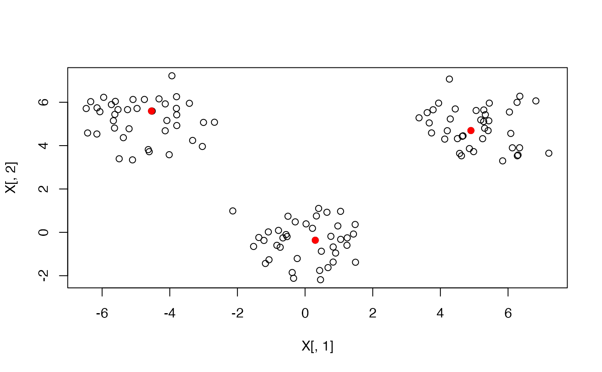

KMedoids Class
KMedoids.RdThis class wraps around the C++ KMedoids class and exposes methods and fields of the C++ object.
Active bindings
k(
integer(1))
The number of medoids/clusters to createmax_iter(
integer(1))
max_iter the maximum number of SWAP steps the algorithm runsbuild_conf(
integer(1))
Parameter that affects the width of BUILD confidence intervals, default 1000swap_conf(
integer(1))
Parameter that affects the width of SWAP confidence intervals, default 10000loss_fn(
character(1))
The loss function, "lp" (for p integer > 0) or one of "manhattan", "cosine", "inf" or "euclidean"
Methods
Method new()
Create a new KMedoids object
Usage
KMedoids$new(k = 5L, max_iter = 1000L, build_conf = 1000, swap_conf = 10000L)Arguments
knumber of medoids/clusters to create, default 5
max_iterthe maximum number of SWAP steps the algorithm runs, default 1000
build_confparameter that affects the width of BUILD confidence intervals, default 1000
swap_confparameter that affects the width of SWAP confidence intervals, default 10000
Method fit()
Fit the KMedoids algorthm given the data and loss. It is advisable to set the seed before calling this method for reproducible results.
Examples
# Generate data from a Gaussian Mixture Model with the given means:
set.seed(10)
n_per_cluster <- 40
means <- list(c(0, 0), c(-5, 5), c(5, 5))
X <- do.call(rbind, lapply(means, MASS::mvrnorm, n = n_per_cluster, Sigma = diag(2)))
obj <- KMedoids$new(k = 3)
obj$fit(data = X, loss = "l2")
meds <- obj$get_medoids_final()
plot(X[, 1], X[, 2])
points(X[meds, 1], X[meds, 2], col = "red", pch = 19)
